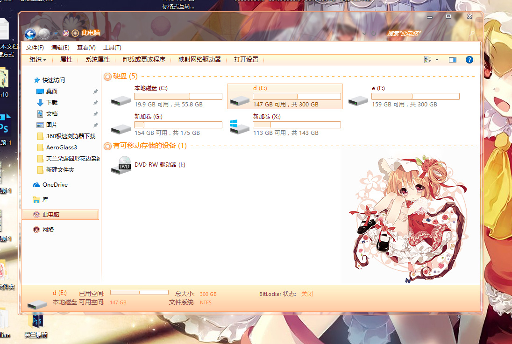
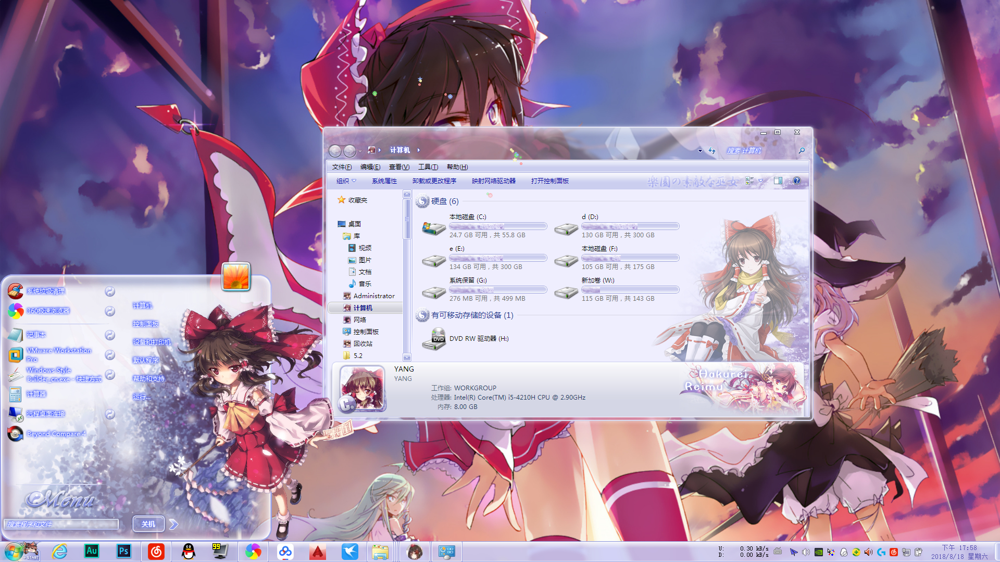
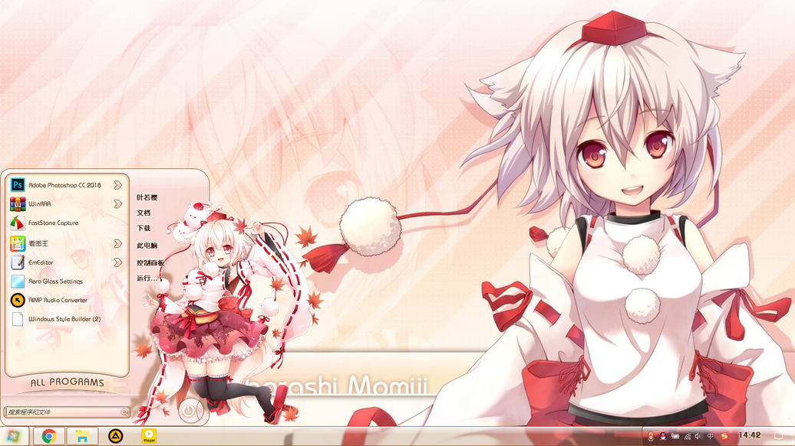

白上 フブキ –
碎碎念啦：
这应该是我的第五个主题了 也是扁平化风格(win10就要有win10的样子嘛 免得被说这个是win7改的主题)汗
主题整体偏紫色系(因为白色蓝色绿色做背景感觉都很刺眼)
字体是绿色\橙色\蓝色\白色
本次主题完善了125%缩放比 也就是说本次是支持100%、125%缩放比
(上一个主题其实也支持我没提及而已 因为图标是直接放大的 看起来有点模糊 而且开始菜单也没做适配 算不上完美)
所以这次的图标都是重做的 96DPI(100%)的和120DPI(125%)单独做了 所以都是高清的了~滑稽
另外 还有壁纸 我记得有人吐槽过 不清晰？ 这次都是2K以上的 来看下分辨率 这次可以了吧？
因为支持125%缩放比肯定会带2K壁纸的
.jpg)
芙兰朵露
《月に寄りそう乙女の作法（近月少女的礼仪）》是由日本Galgame公司Omegavision旗下的Navel品牌为纪念公司
成立10周年，而于2012年10月26日发售的恋爱冒险游戏，PSV版为全年龄。该作由铃平广、西又葵担当人设及原画，真纪
士、王雀孙、东之助、森林彬联手编写剧本。该作品获得了2013年度萌游戏大奖（萌えゲーアワード2013）的最佳作品。

灵梦 暖色
碎碎念啦：
香风智乃，漫画《请问您今天要来点兔子吗？》中及其衍生作品中女主角之一。 咖啡店Rabbit House老板的孙女，身形娇小
却意外地能干，店内杂务也几乎由她一手包办。 个性冷静又沉默寡言，但其实是因为母亲的离去，在人际交往上有点笨拙，超
容易害羞，不坦率。 虽然年纪小，但言行举止颇为成熟，偶尔有孩子气的一面，只是自己并不喜欢被当成小孩子看待。

帕秋莉·诺蕾姬
碎碎念啦：
这应该是我的第五个主题了 也是扁平化风格(win10就要有win10的样子嘛 免得被说这个是win7改的主题)汗
此作为移植7主题版，原作者为“天翔の红牛”，并且已获得红牛大大的复制许可。
咳咳 言归正传讲重点！【不认真看的童鞋,请自行去面壁
这次主题的安装包有了从里到外的改变！【程序源码什么的真是多亏Maple的帮助，在此感谢

帕秋莉★姆Q
碎碎念啦：
一头白发，像人偶一样无性格的少女。身份是陆上自卫队的对精灵部队AST的队员，阶级是上士。 五年前因精灵的现身而令双亲命丧，所以极度的憎恨
着精灵。为了不会再让别人遇上和自己一样的惨剧并为父母报仇，以消灭精灵为目标而奋斗着。后期精灵化，为追寻五年前杀害双亲的〈幻影〉，借用
<十二之弹>回到过去，发现杀死父母之死的真相后精神崩溃，导致灵结晶反转。对整个天宫市展开无差别的全方位攻击。之后被士道拯救并改变过去，
对其称爱情现在才开始。
.jpg)
いろとりどりのセ
碎碎念啦：
这里是若樱，曾做过win7主题的某只~专注于实用风格，随自己喜好的话更喜欢萌萌哒！于是纱雾主题诞生了233
此作为咱的win10处女作 也是从win7主题移植过来的
顺便超级感谢光芒师傅能让我做上win10的主题~喜欢的童鞋欢迎来支持哦w